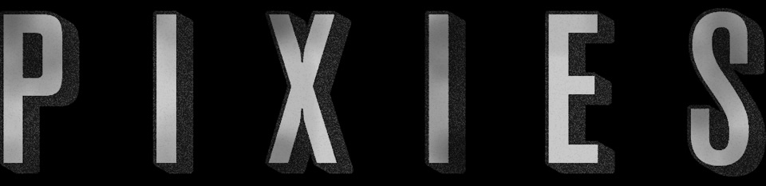

I never could get over the fact that The Pixies formed, worked and separated without America taking them to its heart or even recognizing their existence for the most part. ~David Bowie
The original Pixies line up was formed by Black Francis, whose birth name is Charles Thompson IV, and Joey Santiago first met while attending The University of Massachusetts Amherst.
The two formed a band in January 1986. Kim Deal joined the band two
weeks later after answering a classified add Black Francis had placed seeking a female bassist.

Pixies Discocraphy